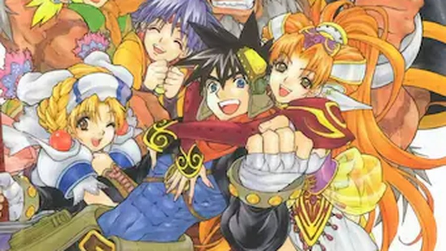
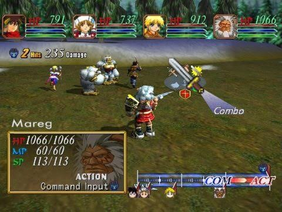
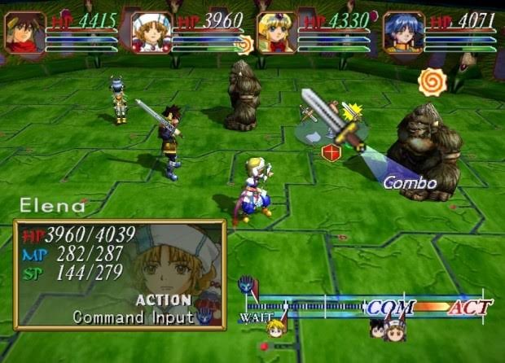
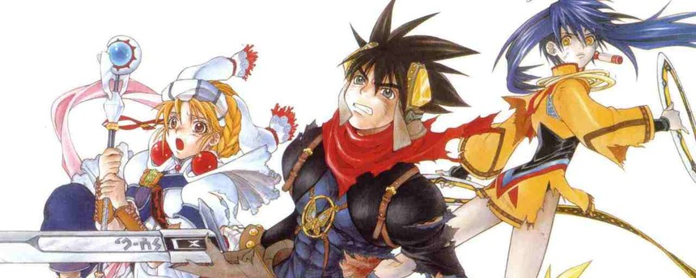

Chuyện bắt đầu từ ông anh hàng xóm.
Ảnh hơn tớ mấy tuổi, học trên tớ hai lớp, và sở hữu thứ quyền lực tối thượng của khu xóm thời đó: một cái máy tính chơi được game. Nhà ảnh là nơi tụi nhỏ trong xóm tụ tập mỗi chiều, và ảnh cai trị cái vương quốc đó bằng một nguyên tắc duy nhất — ai muốn chơi thì phải nghe ảnh giảng về game trước đã.
Mà khổ nỗi, ảnh mê JRPG. Còn tớ thì không.
Thời đó tớ đã thử vài game JRPG rồi bỏ ngang hết. Cái cơ chế vào trận, chọn "Attack" từ menu, rồi ngồi nhìn nhân vật tự đánh nhau — tớ thấy nó cứ sao sao. Game gì mà mình bấm xong rồi ngồi... xem? Thà ra chơi đá banh còn hơn.
Vậy mà Tết năm lớp 11, ảnh dúi vào tay tớ mấy cái đĩa: "Grandia II. Chơi thử đi. Combat khác lắm, không phải loại mày ghét đâu." Tớ cầm về chủ yếu vì nể — kiểu nể một người đã cho mình chơi ké máy tính suốt mấy năm — chứ trong đầu đã tính sẵn là cài lên, chơi độ một tiếng cho có, rồi qua nhà ảnh trả lời "ừ cũng được" cho xong chuyện.
Kế hoạch đó sụp đổ hoàn toàn.
"Combat khác lắm" — hóa ra ảnh không nói xạo
Tớ nhớ trận đánh đầu tiên. Trên màn hình có một thanh ngang, mấy cái icon nhân vật chạy dọc theo nó, tới điểm "COM" thì dừng lại cho mình chọn lệnh, tới "ACT" thì mới thực sự ra đòn.
Ban đầu tớ tưởng nó chỉ là kiểu trang trí màu mè. Vài trận sau mới ngớ người ra: cái khoảng giữa COM và ACT đó chính là toàn bộ linh hồn của game.
Vì trong lúc kẻ địch đang "lấy đà" giữa hai điểm đó, mình có thể đấm nó một phát đủ mạnh — và icon của nó văng ngược trở lại. Đòn nó đang chuẩn bị tung ra? Hủy. Công sức nó chờ cả lượt? Bay màu. Game gọi đó là cancel, còn tớ hồi đó gọi là "đấm cho mày quên bài".


Và điều ngược lại cũng đúng — bọn địch cũng cancel được mình, nên mỗi trận đánh thành ra một màn đấu trí nho nhỏ: đánh sớm để chặn đòn nguy hiểm của nó, hay ráng chờ thêm một nhịp để tung đòn to hơn, chấp nhận rủi ro ăn đòn trước? Đánh boss trong Grandia II khó không phải vì nó trâu, mà vì lơ là một giây là trả giá liền.
Tết năm đó tớ ngồi lì trước màn hình từ sáng tới khuya. Mẹ kêu đi chúc Tết, tớ khất "con đánh xong con boss này đã" — và ai chơi JRPG rồi cũng biết, "con boss này" là một khái niệm có thể co giãn tới ba tiếng đồng hồ.
Càng chơi càng lún
Điều tớ không ngờ là thứ giữ tớ lại không phải combat — mà là câu chuyện.
Bạn vào vai Ryudo, một Geohound — lính đánh thuê, việc gì cũng nhận miễn có tiền. Ryudo thuộc dạng nhân vật chính mà mở miệng ra là muốn... đấm: cộc cằn, mỉa mai, không tin thần thánh, không tin người, chắc cũng không tin luôn cả chính mình. Nhiệm vụ mở đầu nghe rất chi là thủ tục: hộ tống một cô ca sĩ thánh ca tên Elena của Giáo hội Granas đi dự một buổi lễ phong ấn.
Buổi lễ tất nhiên là toang — không toang thì lấy gì thành game. Elena bị một mảnh của Valmar, vị thần bóng tối trong truyền thuyết, xâm nhập vào người. Và từ trong cô trỗi dậy một nhân cách hoàn toàn khác: Millenia — lộng lẫy, nguy hiểm, và trái ngược với Elena từng centimet.

Từ đó, mỗi vùng đất Ryudo đi qua đều mang một vết thương riêng — một ngôi làng có chuyện kỳ lạ với đồ ăn, một đứa trẻ nhìn thấy những thứ không nên thấy, một hiệp sĩ hiền lành bỗng hóa khát máu. Game không vội. Nó thả từng mảnh cho mình tự ghép, tự nghi ngờ. Và đến khi mình tưởng đã hiểu hết mọi thứ, nó lật bàn: nếu phe "thiện" trong câu chuyện không hề thiện như Giáo hội vẫn rao giảng thì sao? Đức tin còn nghĩa lý gì khi cái nền của nó bắt đầu lung lay?
Câu hỏi đó, với một thằng nhóc lớp 11 đang nghỉ Tết, là hơi quá tầm. Nhưng cũng chính vì thế mà nó ở lại trong đầu tớ lâu đến vậy.
Đoạn Mareg hy sinh — tớ buồn thật sự, kiểu buồn ngồi thừ ra trước màn hình, vì cái nhân vật tưởng chỉ là "gã thú nhân to xác ồn ào" ở đầu game hóa ra lại là người tớ quý nhất đội.
Đoạn ngôi làng có đứa trẻ bị mảnh Valmar chiếm hữu — không cutscene hoành tráng, không nhạc dâng trào, chỉ là thoại, rồi im lặng, rồi tớ ngồi một lúc mới bấm tiếp được. Và đoạn về Melfice, anh trai của Ryudo — thôi, đoạn này tớ không kể. Ai chơi rồi sẽ hiểu. Ai chưa chơi thì càng nên giữ nguyên để tự trải nghiệm.
Nhìn lại sau hơn hai mươi năm
Sau này tớ mới biết Grandia II là con cưng của Game Arts — studio Nhật từng làm series Lunar lừng danh (game đó cũng hay lắm, tớ sẽ kể vào một dịp khác). Grandia phần đầu ra năm 1997 trên Sega Saturn, ấm áp, lạc quan, bán rất chạy ở Nhật. Đến phần hai, họ quyết định đi ngược hoàn toàn: tối hơn, trưởng thành hơn, và là phần đầu tiên dùng đồ họa 3D toàn phần.
Trên Dreamcast năm 2000, đây là một trong những JRPG đẹp nhất thời điểm đó. Có một chuyện hơi buồn cười là bản port PS2 ra sau lại tệ hơn bản gốc — texture xấu hơn, giật hơn — nên nếu giờ bạn muốn chơi, cứ nhắm thẳng bản Anniversary Edition trên Steam, được remaster từ bản Dreamcast xịn.
Còn một điểm trừ tớ phải nói cho công bằng: về cuối game, một số skill max cấp mạnh đến mức phá luôn cái hay của hệ thống combat. Cả game bắt mình tính toán từng nhịp, xong tự dưng đưa cho mình cây búa tạ đập tan mọi tính toán. Hơi tiếc — nhưng chắc lúc đó thằng nhóc lớp 11 cũng chẳng phàn nàn gì, có búa tạ thì cứ quất thôi.
Vĩ thanh
Ra Tết, tớ qua nhà trả đĩa. Ông anh hàng xóm hỏi đúng một câu: "Thấy chưa?" — với cái mặt của người biết trước kết quả từ ba tuần trước.
Tớ không nhớ mình trả lời gì. Chắc là cố nói kiểu bâng quơ "ừ cũng hay" để đỡ quê. Nhưng cả hai đứa đều biết là tớ vừa mất nguyên một cái Tết cho game của ảnh — và đó là một trong những cái Tết đáng nhớ nhất thời đi học của tớ.
Giờ mỗi lần thấy Grandia II trên Steam, tớ lại nhớ ảnh. Không biết ảnh còn nhớ mình từng dúi mấy cái đĩa đó vào tay thằng nhóc hàng xóm không. Chắc là không. Người gieo thường quên, chỉ người nhận là nhớ.

Grandia II Anniversary Edition hiện có trên Steam và GOG. Bản Nintendo Switch trong Grandia HD Collection cũng ổn nếu bạn thích chơi trên máy cầm tay. Còn nếu bạn có một đứa em hàng xóm nào đó chưa biết chơi gì Tết này — bạn biết phải làm gì rồi đó.